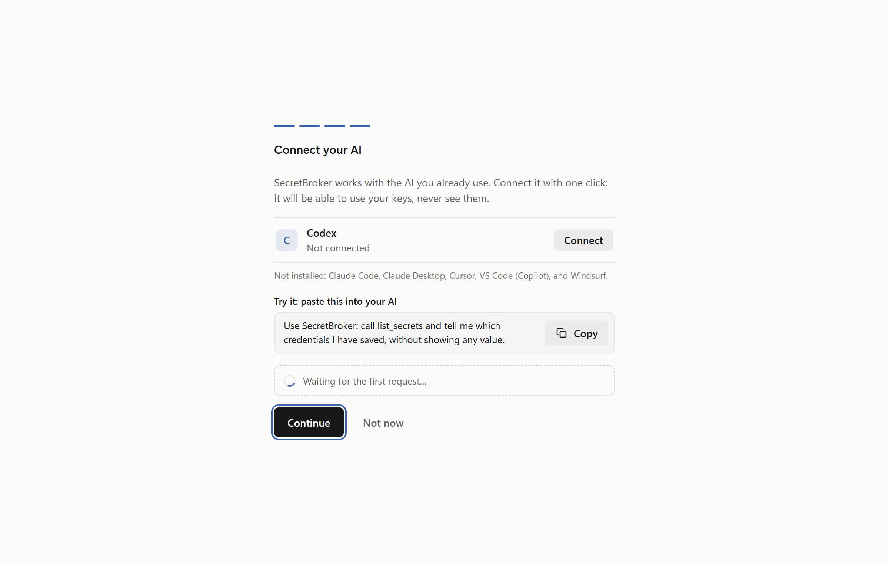
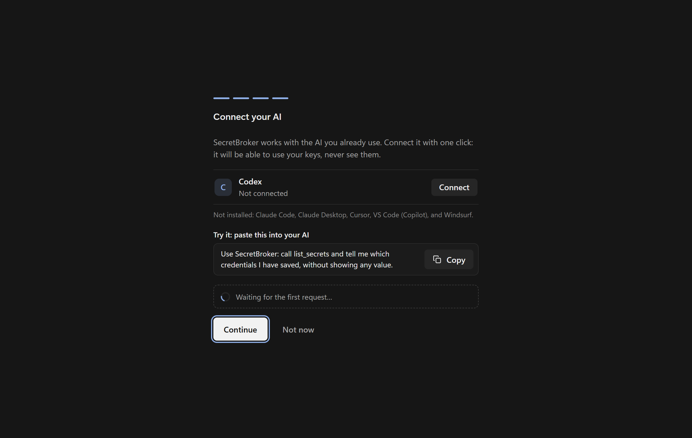
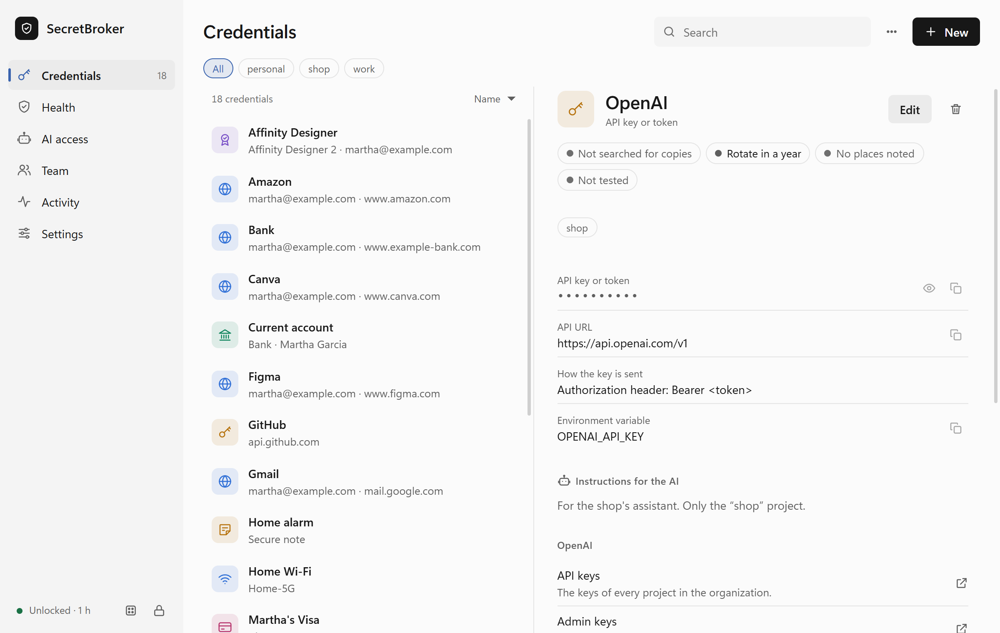
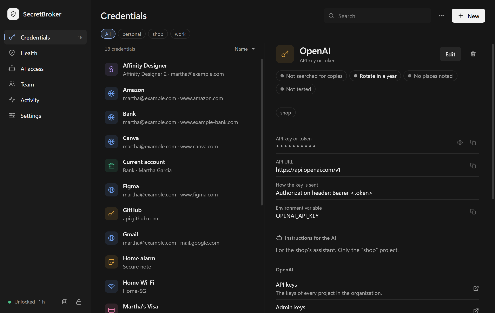
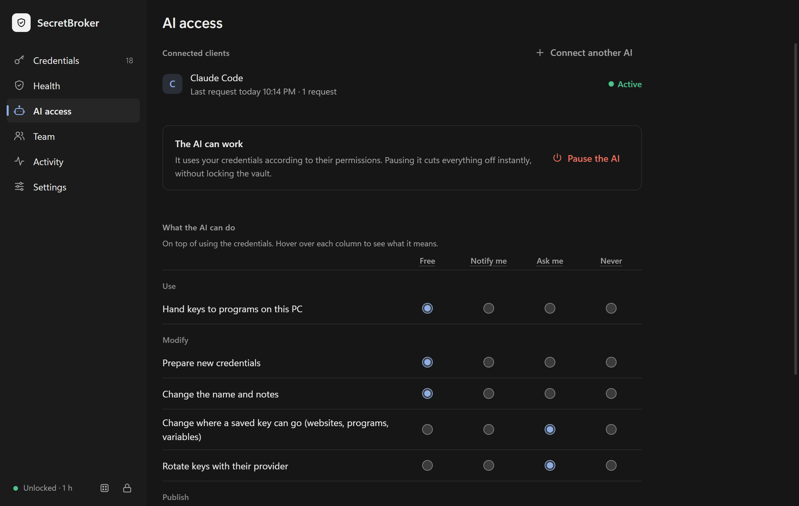
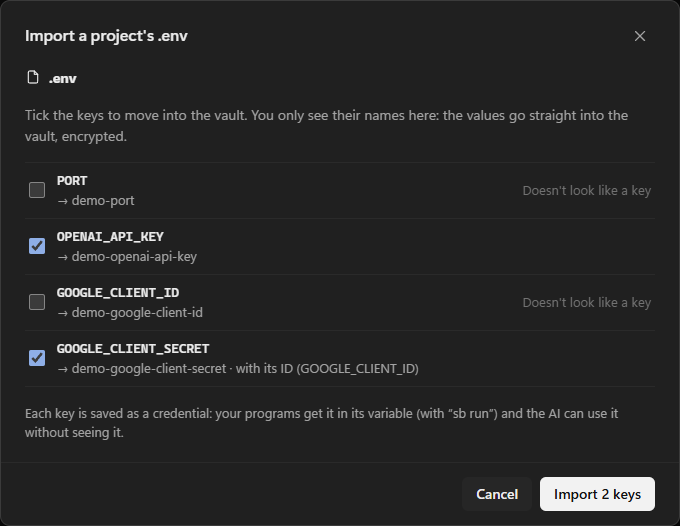

Connect your AI
SecretBroker is an MCP server on your own machine. The app connects the clients it knows with one click: Claude Code, Claude Desktop, Cursor, VS Code (Copilot), Windsurf and Codex.
- Open AI access and click Connect another AI. The same screen is the last step of the setup, and Connect your AI on an empty vault.
- Click Connect next to your client. Then let it notice: open a new session in Claude Code or Codex, restart Cursor or Windsurf, reload VS Code and use Copilot Chat in Agent mode, or quit Claude Desktop completely (next to the clock too) and open it again.
- Try it. The screen offers a phrase to paste into your AI: “Use SecretBroker: call list_secrets and tell me which credentials I have saved, without showing any value.” When the request arrives, the app says who it came from.


On Windows the installer already connects Claude Code and Claude Desktop if they are installed. The MCP endpoint listens on 127.0.0.1 only, asks for a token and checks where requests come from, so a web page cannot drive it.
Add an API key
- In Credentials, click New and choose API key or token.
- Paste the key. For known providers (OpenAI, Anthropic, GitHub, Stripe, Cloudflare and others) the API URL, How the key is sent and the Environment variable are filled in for you.
- Write Instructions for the AI if it helps: what the key is for and how it should be used. The AI reads this text, so put nothing secret in it. Private notes are only for you.


Under AI permissions each credential says where it may go:
- Websites where it can use it: domains, separated by commas. The key is never sent anywhere else, only over HTTPS, and redirects are not followed.
- Programs that can use it: names such as
ghorpsql. They receive the key in the Environment variables you list. - Ask for your approval: Once per session, Always or Never.
Your agent can also prepare a credential with everything but the secret. It appears in the app as “The AI prepared this credential. Paste the key and it's ready to use.” The other types are SSH server, Database, Cloud (AWS), Other secret and Configuration (not secret), for IDs your programs need that are not secrets.
How approvals work
When the agent uses a credential that asks, the app comes to the front with the request: who is asking, What for, according to the AI, which credential, and the exact request or command.


- Just this once allows this request. Allow for 24 hours lets that client use that credential without asking again. Deny refuses, and Decide later leaves it waiting until it expires, when the agent gets an error.
- Settings › Security › Remember approvals sets how long “allow” lasts: 8 hours, 24 hours or until you lock. Locking by hand forgets every approval.
- One request per task. An agent can ask at the start for everything a task needs, with its reasons, and you allow them together.
- Ask again if it's used a lot. Even an approved credential asks again after 100 uses in an hour (50, 100, 500 or no limit). It stops loops and surprises.
- If a command looks like it deletes, stops or modifies data, the dialog says so before you allow it.
The AI access page


- Approved now lists what the AI may use without asking, and until when. Withdraw takes one approval back; Withdraw all, every one.
- Pause the AI cuts everything off at once without locking the vault: the AI cannot use, create or even list credentials. It is also in the menu of the icon next to the clock.
- What the AI can do, besides using credentials: for each action (handing keys to programs on this PC, preparing new credentials, changing names and notes, changing where a key may go, uploading to GitHub) you choose Free, Notify me, Ask me or Never.
Move a project's .env into the vault
In the app: Import a project's .env, on an empty vault or in the ⋯ menu next to New. Pick the file, tick its keys (you only see names) and click Import. Then Remove from file takes them out of the .env; the other variables stay.

From a terminal, or by asking your agent, since the command never prints a value:
sb import .env --deleteIt stores the variables that look like keys (names with KEY, TOKEN, SECRET, PASSWORD…, or URLs with a password), leaves the rest (PORT, NODE_ENV…) where they were, and shows you the list of names in the app to confirm. --all imports every variable and --project sets the prefix of the new names. Keys of known providers arrive already configured.
Either way the project folder gets a .secretbroker file with the names of the credentials and no values. It can be committed.
Run your apps with sb run
.secretbroker says which credential each environment variable comes from:
OPENAI_API_KEY = openai # that variable's template in the credential, or {{value}}
DATABASE_URL = shop-db:connection_url # one field of the credential
aws-prod # every environment variable of the credentialsb run -- npm run dev # or python app.py, dotnet run…
sb check # is every credential in .secretbroker ready?- The variables go from the vault to the process, never through a file.
- Only credentials with Environment variables in their AI permissions are handed over: that is how you say a credential may be used by local programs.
- Approval follows each credential's setting, and every delivery is in Activity with the command and the folder.
- When the output is not a terminal, for example when an agent started the app,
sbredacts the keys line by line. - Your code just reads environment variables, so production works the same with whatever the platform provides. The agent can store a credential as a GitHub Actions secret without seeing it.
Rotate a key with help
For providers that issue keys through their API (today Cloudflare and GitLab), Rotate key asks for a new one, saves it and uploads it again to the GitHub secrets it was in. The old key stops working at once.
For everything else, Rotate with help walks you through it:
- Where it's used. Every place that holds the key: develop, staging, production, each server, Vercel, CI. The app keeps this list on the credential, and the AI adds to it when it sets a place up.
- Create the new key on the provider's site, with a direct link and a suggested name. The current one keeps working, so nothing breaks.
- Paste the new key and click Test and save. It is tested with the provider before it replaces the current one: if it does not work, nothing changes.
- Put it in each place and tick each one off.
- Revoke the old key at the provider. Check that it no longer works confirms it is dead.


- Databases: the app generates a password and gives the exact command for PostgreSQL, MySQL, SQL Server, MongoDB or Redis, or the link to a managed provider's console. Save and let the AI apply it hands the job to your agent, which never sees the password.
- Secrets with an ID (an OAuth client, an app ID): the wizard asks whether the ID changed and keeps both in step.
- A rotation left half-done is remembered, and the credential says what is missing.
- Reminders: each credential, or Settings › Security › Remind me to rotate keys. Expiry dates warn 14 days ahead.
- For a provider the app does not know, Ask the AI for a guide. The app marks it as written by the AI, with its sources: check the links before following it.
Find keys that leaked
Each credential shows whether it still lives only in the vault. Health › Search for copies looks for your keys, on your PC, in:
- AI conversations (Claude Code and Codex transcripts) and terminal histories (PowerShell, bash);
- program settings such as
.claude.json,.npmrc,.awsand.ssh, and environment variables; - your project folders and their git history. Folders where you used Claude Code are added by themselves; Settings › Copies of your keys › Project folders adds more.
It also recognises JSON, URL-encoded and base64 forms, and after the first run reads only what changed. By default it runs when you unlock, at most every 12 hours. Nothing it reads leaves your PC.

For each copy: See which files (after confirming it's you), Remove from this file, which puts [REDACTED:name] in its place and keeps a .secretbroker.bak next to it, Delete the copy, or Ignore for a test file. If the AI already saw the key, the app says so: rotate it.
Check that keys work (Settings › Security, every day by default) tests each key with a read-only call to its own provider. A working key that suddenly stops was probably revoked after a leak. The privacy page lists exactly what is sent.
What the agent can call
| Tool | What it does |
|---|---|
list_secrets | The catalogue: names, notes and what each credential is for. No values. |
http_request | An HTTPS request to an allowed domain, with the key added automatically or through {{value}}, {{username}} and {{password}}. |
ssh_exec, ssh_upload, ssh_download | Commands, also with sudo, and files over SFTP. |
run_command | Runs an allowed program (gh, psql, aws…) with the credential in its environment. |
request_access | Asks once, at the start of a task, for every credential it will need. |
create_credential, update_credential | Prepares a credential without its secret, or changes names, notes and permissions. Anything that widens where a key may go waits for you. |
check_credential, credential_activity | Whether a key still works, its age and its recent history. No values. |
rotate_credential, delete_credential | Asks the provider for a new key, or proposes deleting a credential. You confirm. |
push_github_secret | Stores a credential as a GitHub Actions secret, encrypted with the repository's key. |
No tool returns a secret value, and output is redacted before the agent sees it.
Limits worth knowing
- A program allowed in
run_commandor started withsb runreceives the key in clear. An agent that can write and run code in such a program,node -eorpythonfor example, can take it out. - Redaction is best effort against the transformations it knows. An allowed host that echoes data back in an unusual encoding, or one the agent controls, can leak a key. Keep the lists of hosts tight.
- A credential allowed for the day can be used for any operation it permits during that time.
- Never run your AI agent as administrator: that defeats the isolation of the service.
The security page has the whole picture.
Last updated: November 18, 2026